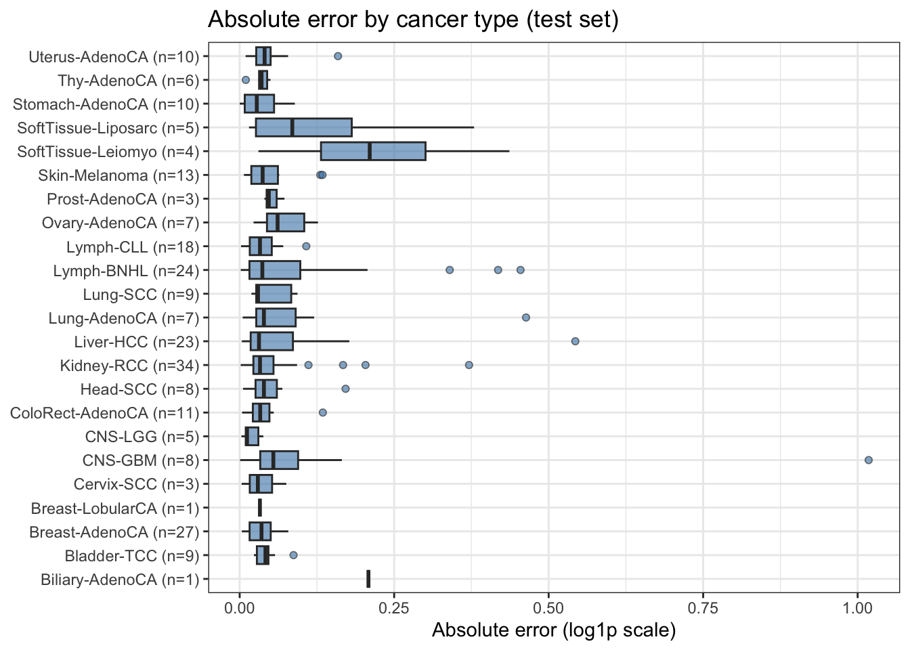

# A tibble: 3 × 5
model rmse_mean rmse_sd r2_mean r2_sd
<chr> <dbl> <dbl> <dbl> <dbl>
1 rf 0.167 0.0805 0.271 0.490
2 lasso 0.173 0.0834 0.269 0.285
3 lm 0.174 0.0831 0.246 0.32713_tTF_regression_primary
Setup
Since we are in a regression task, it is better to have a distribution for our response variable as symmetric as possible. We know it is currently strongly skewed, thus we can apply a log1p transformation to deal with its asymmetry and its zero values. We can do the same also for similarly distributed features, such as telomere insertion.
We also drop unwanted columns and recode alt_status as 0 (ALT-low) and 1 (ALT-high).
Split the dataset
We split the dataset with a 70/30 split in training set and test set. We won’t touch the latter until final performance estimation, to avoid data leakage.
Metrics functions
We define functions to help us in the evaluation of the performances of the models. In particular we will use RMSE and R squared.
Manual Cross-Validation
We use a 5-fold cross-validation on the training set. We do it manually to have to possibility to further extend to other metrics, methods, or whatever.
CV results
Averages and standard deviations on 5 folds.

Feature importance : LASSO
For each feature we register in how many folds is has been selected from Lasso and the mean/SD of the coefficient. A feature selected in all folds with a stable coefficient should be a strong enough signal. Otherwise, rarely selected features or unstable coefficients must be interpreted carefully.
# A tibble: 13 × 5
feature n_selected freq coef_mean coef_sd
<chr> <int> <dbl> <dbl> <dbl>
1 telomere_insertion_rate 25 1 0.0606 0.0197
2 telomere_content_log2 25 1 0.0322 0.00499
3 TTCGGG_singleton_dist 25 1 0.0274 0.00887
4 TCAGGG_singleton_dist 25 1 0.0172 0.00746
5 TGAGGG_singleton_dist 25 1 0.0129 0.00699
6 alt_status 24 0.96 0.0809 0.0406
7 TERT_FPKM 15 0.6 0.00900 0.00557
8 TTTGGG_singleton_dist 14 0.56 -0.00715 0.00424
9 TTGGGG_singleton_dist 11 0.44 0.00586 0.00364
10 GTAGGG_singleton_dist 6 0.24 0.00381 0.00587
11 TAAGGG_singleton_dist 6 0.24 -0.00376 0.00341
12 ATAGGG_singleton_dist 5 0.2 -0.00607 0.00201
13 CTAGGG_singleton_dist 4 0.16 -0.00811 0.00502
Feature importance: Random Forest
# A tibble: 13 × 3
feature inc_mse_mean inc_mse_sd
<chr> <dbl> <dbl>
1 TTCGGG_singleton_dist 10.4 2.40
2 telomere_insertion_rate 8.62 2.53
3 telomere_content_log2 6.65 3.47
4 alt_status 3.35 0.948
5 TERT_FPKM 3.10 1.75
6 TGAGGG_singleton_dist 1.15 2.80
7 GTAGGG_singleton_dist 0.936 1.44
8 TCAGGG_singleton_dist 0.768 1.34
9 ATAGGG_singleton_dist 0.713 1.33
10 TTTGGG_singleton_dist 0.488 2.02
11 CTAGGG_singleton_dist 0.201 1.14
12 TTGGGG_singleton_dist 0.110 2.34
13 TAAGGG_singleton_dist -0.817 1.20 
Comparison LASSO vs RF: do they agree?

Final evaluation on test set
Let’s fit each model on the whole training set and evaluate on the test set.
# A tibble: 3 × 3
model rmse r2
<chr> <dbl> <dbl>
1 Random Forest 0.119 0.439
2 LASSO 0.125 0.386
3 LM 0.127 0.367Quantification of the residuals
Beware that these results are in log1p scale!
# A tibble: 246 × 6
true pred error abs_error perc_error cancer_type
<dbl> <dbl> <dbl> <dbl> <chr> <fct>
1 1.10 0.0795 -1.02 1.02 -92.8% CNS-GBM
2 0.931 0.919 -0.0119 0.0119 -1.3% CNS-LGG
3 0.870 0.860 -0.00986 0.00986 -1.1% CNS-LGG
4 0.861 0.776 -0.0852 0.0852 -9.9% SoftTissue-Liposarc
5 0.747 0.648 -0.0992 0.0992 -13.3% Liver-HCC
6 0.677 0.213 -0.463 0.463 -68.5% Lung-AdenoCA
7 0.627 0.0838 -0.543 0.543 -86.6% Liver-HCC
8 0.572 0.154 -0.418 0.418 -73.1% Lymph-BNHL
9 0.513 0.142 -0.371 0.371 -72.4% Kidney-RCC
10 0.501 0.0468 -0.454 0.454 -90.7% Lymph-BNHL
11 0.475 0.135 -0.340 0.340 -71.5% Lymph-BNHL
12 0.462 0.841 0.379 0.379 82.1% SoftTissue-Liposarc
13 0.422 0.413 -0.00960 0.00960 -2.3% Lymph-BNHL
14 0.366 0.803 0.436 0.436 119.1% SoftTissue-Leiomyo
15 0.316 0.134 -0.181 0.181 -57.4% SoftTissue-Liposarc
16 0.278 0.106 -0.171 0.171 -61.7% Head-SCC
17 0.253 0.0443 -0.208 0.208 -82.5% Biliary-AdenoCA
18 0.246 0.0392 -0.207 0.207 -84.1% Lymph-BNHL
19 0.195 0.0279 -0.167 0.167 -85.7% Kidney-RCC
20 0.190 0.112 -0.0787 0.0787 -41.4% Breast-AdenoCA
21 0.168 0.202 0.0339 0.0339 20.2% Lymph-BNHL
22 0.166 0.197 0.0303 0.0303 18.2% SoftTissue-Leiomyo
23 0.164 0.330 0.165 0.165 100.6% SoftTissue-Leiomyo
24 0.160 0.154 -0.00562 0.00562 -3.5% ColoRect-AdenoCA
25 0.155 0.0654 -0.0894 0.0894 -57.8% Liver-HCC
26 0.153 0.0413 -0.111 0.111 -72.9% Kidney-RCC
27 0.141 0.0577 -0.0834 0.0834 -59.1% Lung-SCC
28 0.139 0.181 0.0419 0.0419 30.2% Lymph-BNHL
29 0.138 0.230 0.0919 0.0919 66.6% Lung-SCC
30 0.135 0.0387 -0.0963 0.0963 -71.3% Lymph-BNHL
31 0.134 0.0537 -0.0807 0.0807 -60.1% Lymph-BNHL
32 0.127 0.0345 -0.0929 0.0929 -72.9% Kidney-RCC
33 0.126 0.0329 -0.0936 0.0936 -74% Lung-SCC
34 0.116 0.0278 -0.0879 0.0879 -75.9% Kidney-RCC
35 0.113 0.0499 -0.0627 0.0627 -55.7% Lymph-BNHL
36 0.110 0.0374 -0.0731 0.0731 -66.1% Breast-AdenoCA
37 0.106 0.0561 -0.0500 0.0500 -47.2% Breast-AdenoCA
38 0.102 0.137 0.0352 0.0352 34.5% Lymph-BNHL
39 0.0960 0.0360 -0.0599 0.0599 -62.5% Lymph-CLL
40 0.0955 0.0456 -0.0499 0.0499 -52.2% Thy-AdenoCA
41 0.0928 0.0377 -0.0551 0.0551 -59.4% ColoRect-AdenoCA
42 0.0906 0.0483 -0.0423 0.0423 -46.7% Uterus-AdenoCA
43 0.0885 0.0372 -0.0513 0.0513 -57.9% Head-SCC
44 0.0884 0.0376 -0.0508 0.0508 -57.4% Lymph-CLL
45 0.0869 0.188 0.101 0.101 116.1% Ovary-AdenoCA
46 0.0861 0.0821 -0.00396 0.00396 -4.6% ColoRect-AdenoCA
47 0.0858 0.0397 -0.0460 0.0460 -53.7% Ovary-AdenoCA
48 0.0854 0.104 0.0188 0.0188 22% Breast-AdenoCA
49 0.0849 0.0698 -0.0151 0.0151 -17.8% SoftTissue-Liposarc
50 0.0841 0.0898 0.00574 0.00574 6.8% Lymph-CLL
# ℹ 196 more rows# A tibble: 1 × 6
mean_error sd_error mae median_ae max_ae rmse
<dbl> <dbl> <dbl> <dbl> <dbl> <dbl>
1 0.00980 0.119 0.0637 0.0358 1.02 0.119
Two-part model
Call:
glm(formula = I(tf_rate > 0) ~ ., family = binomial(link = "logit"),
data = train_s)
Coefficients:
Estimate Std. Error z value Pr(>|z|)
(Intercept) 0.87156 0.11658 7.476 7.67e-14 ***
alt_status -0.20604 0.66097 -0.312 0.755
telomere_insertion_rate 0.43675 0.38672 1.129 0.259
telomere_content_log2 0.55606 0.11750 4.733 2.22e-06 ***
TERT_FPKM 0.13392 0.12507 1.071 0.284
ATAGGG_singleton_dist -0.05889 0.09826 -0.599 0.549
CTAGGG_singleton_dist -0.05521 0.10816 -0.510 0.610
GTAGGG_singleton_dist 0.10531 0.10612 0.992 0.321
TAAGGG_singleton_dist 0.08701 0.10097 0.862 0.389
TCAGGG_singleton_dist -0.02807 0.11699 -0.240 0.810
TGAGGG_singleton_dist -0.17846 0.12515 -1.426 0.154
TTCGGG_singleton_dist 0.06617 0.13840 0.478 0.633
TTGGGG_singleton_dist 0.17370 0.11001 1.579 0.114
TTTGGG_singleton_dist -0.11227 0.11094 -1.012 0.312
---
Signif. codes: 0 '***' 0.001 '**' 0.01 '*' 0.05 '.' 0.1 ' ' 1
(Dispersion parameter for binomial family taken to be 1)
Null deviance: 719.28 on 570 degrees of freedom
Residual deviance: 673.00 on 557 degrees of freedom
AIC: 701
Number of Fisher Scoring iterations: 6
Call:
glm(formula = tf_rate ~ ., family = Gamma(link = "log"), data = df_positive)
Coefficients:
Estimate Std. Error t value Pr(>|t|)
(Intercept) -2.501663 0.087971 -28.437 < 2e-16 ***
alt_status 0.637413 0.503099 1.267 0.20596
telomere_insertion_rate 0.110992 0.097312 1.141 0.25478
telomere_content_log2 0.257942 0.086688 2.976 0.00312 **
TERT_FPKM 0.051511 0.085205 0.605 0.54585
ATAGGG_singleton_dist 0.011614 0.090306 0.129 0.89774
CTAGGG_singleton_dist 0.014733 0.099906 0.147 0.88284
GTAGGG_singleton_dist 0.002918 0.092250 0.032 0.97478
TAAGGG_singleton_dist 0.058381 0.091567 0.638 0.52414
TCAGGG_singleton_dist 0.155189 0.103309 1.502 0.13390
TGAGGG_singleton_dist 0.101375 0.096172 1.054 0.29252
TTCGGG_singleton_dist 0.007240 0.103426 0.070 0.94423
TTGGGG_singleton_dist 0.063402 0.093243 0.680 0.49695
TTTGGG_singleton_dist -0.020268 0.099713 -0.203 0.83904
---
Signif. codes: 0 '***' 0.001 '**' 0.01 '*' 0.05 '.' 0.1 ' ' 1
(Dispersion parameter for Gamma family taken to be 2.577636)
Null deviance: 518.73 on 385 degrees of freedom
Residual deviance: 288.58 on 372 degrees of freedom
AIC: -1075.8
Number of Fisher Scoring iterations: 22


# A tibble: 13 × 3
term avg_abs_coef n_sig
<chr> <dbl> <int>
1 alt_status 0.422 0
2 telomere_content_log2 0.407 2
3 telomere_insertion_rate 0.274 0
4 TGAGGG_singleton_dist 0.140 0
5 TTGGGG_singleton_dist 0.119 0
6 TERT_FPKM 0.0927 0
7 TCAGGG_singleton_dist 0.0916 0
8 TAAGGG_singleton_dist 0.0727 0
9 TTTGGG_singleton_dist 0.0663 0
10 GTAGGG_singleton_dist 0.0541 0
11 TTCGGG_singleton_dist 0.0367 0
12 ATAGGG_singleton_dist 0.0353 0
13 CTAGGG_singleton_dist 0.0350 0